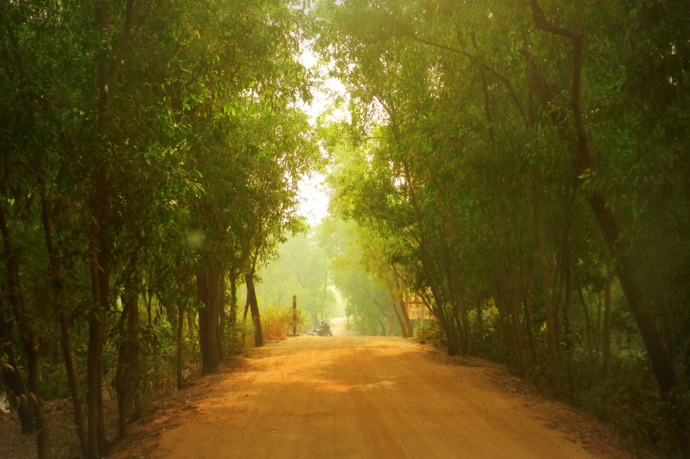

WEEKEND TRiPS
Places to go with FRIENDS!
BALASORE
Balasore Dublagadi Beach, located in the Balasore district of Odisha, India, is renowned for its natural beauty and tranquil atmosphere. With its golden sands, clear waters, and lush greenery, it offers visitors a serene retreat away from the hustle and bustle of city life. The beach is relatively less crowded compared to other popular beaches in the region, making it an ideal destination for those seeking peace and solitude. Its picturesque surroundings also make it a favorite spot for photographers and nature enthusiasts. Additionally, the beach is known for its seafood delicacies, offering visitors a chance to indulge in local cuisine while enjoying the stunning coastal views. Overall, Balasore Dublagadi Beach provides a perfect blend of relaxation, natural beauty, and culinary delights for travelers exploring the eastern coast of India.
To know more, tap on details
DetailsBOKKHALI BEACH

Bakkhali Sea Beach, situated in the South 24 Parganas district of West Bengal, India, is a charming coastal destination known for its pristine sands and tranquil waters. This picturesque beach is a popular retreat for tourists seeking a peaceful getaway amidst scenic surroundings. Bakkhali is renowned for its unique "Crescent Shape" where the beach curves like a crescent moon, offering breathtaking panoramic views of the Bay of Bengal. The beach is also famed for its spectacular sunrises and sunsets, attracting visitors eager to witness nature's vibrant displays. With its relaxed atmosphere and opportunities for leisurely walks along the shore, Bakkhali Sea Beach offers a serene escape for beach lovers and nature enthusiasts alike.
To know more, tap on details
DetailsDARJEELING

Darjeeling, nestled in the Indian state of West Bengal, is a picturesque hill station renowned for its breathtaking views of the Himalayas, lush tea gardens, and colonial architecture. This charming town, often referred to as the "Queen of the Hills," offers a perfect blend of natural beauty and cultural heritage. With its pleasant climate, stunning vistas, and rich cultural tapestry, Darjeeling captivates travelers seeking a serene mountain retreat amidst unparalleled beauty.Visitors can savor the world-famous Darjeeling tea, explore vibrant local markets, and embark on scenic train rides aboard the UNESCO World Heritage Darjeeling Himalayan Railway.
To know more, tap on details
DetailsGHATSHILA
Ghatshila, situated in the East Singhbhum district of Jharkhand, India, is a tranquil town nestled amidst picturesque landscapes and rolling hills. Known for its serene ambiance and natural beauty, Ghatshila is a haven for nature lovers and adventure enthusiasts alike. The town is dotted with lush forests, sparkling waterfalls, and serene rivers, offering ample opportunities for trekking, hiking, and exploring the outdoors. Ghatshila is also famous for its historic significance, with remnants of ancient temples and archaeological sites adding to its cultural charm. With its peaceful atmosphere and scenic vistas, Ghatshila beckons travelers seeking a rejuvenating escape amidst nature's splendor.
To know more, tap on details
DetailsMANDARMANI
Mandarmani, located in the East Midnapore district of West Bengal, India, is a serene seaside village known for its pristine beaches and tranquil ambiance. This coastal paradise offers miles of soft sands, clear waters, and breathtaking sunsets, making it a popular destination for beach lovers and leisure seekers. Visitors can indulge in various water sports activities, take leisurely strolls along the shore, or simply relax and unwind amidst the soothing sound of waves. With its laid-back atmosphere and scenic beauty, Mandarmani provides a perfect retreat for those looking to escape the hustle and bustle of city life and immerse themselves in nature's tranquility.
To know more, tap on details
DetailsMOUSUNI ISLAND
Mousuni Island, located in the South 24 Parganas district of West Bengal, India, is a hidden gem nestled amidst the vast expanse of the Sundarbans delta. This serene island paradise boasts pristine beaches, mangrove forests, and tranquil backwaters, offering visitors a blissful retreat away from the hustle and bustle of city life. Mousuni Island is known for its secluded and unspoiled beauty, making it an ideal destination for nature lovers, birdwatchers, and those seeking a peaceful escape. With its picturesque landscapes and serene ambiance, Mousuni Island invites travelers to unwind, reconnect with nature, and experience the beauty of rural coastal life.
To know more, tap on details
DetailsSHANTINIKETAN
Shantiniketan, located in the Birbhum district of West Bengal, India, is a renowned cultural and educational hub founded by Nobel laureate Rabindranath Tagore. This tranquil town is celebrated for its vibrant arts scene, serene ambiance, and unique educational philosophy centered around nature and creativity. Shantiniketan is home to Visva-Bharati University, which attracts students and scholars from around the world. The town hosts various cultural festivals and events throughout the year, including the famous Poush Mela. With its lush surroundings, artistic legacy, and emphasis on holistic education, Shantiniketan offers visitors a harmonious blend of culture, creativity, and tranquility.
To know more, tap on details
Details